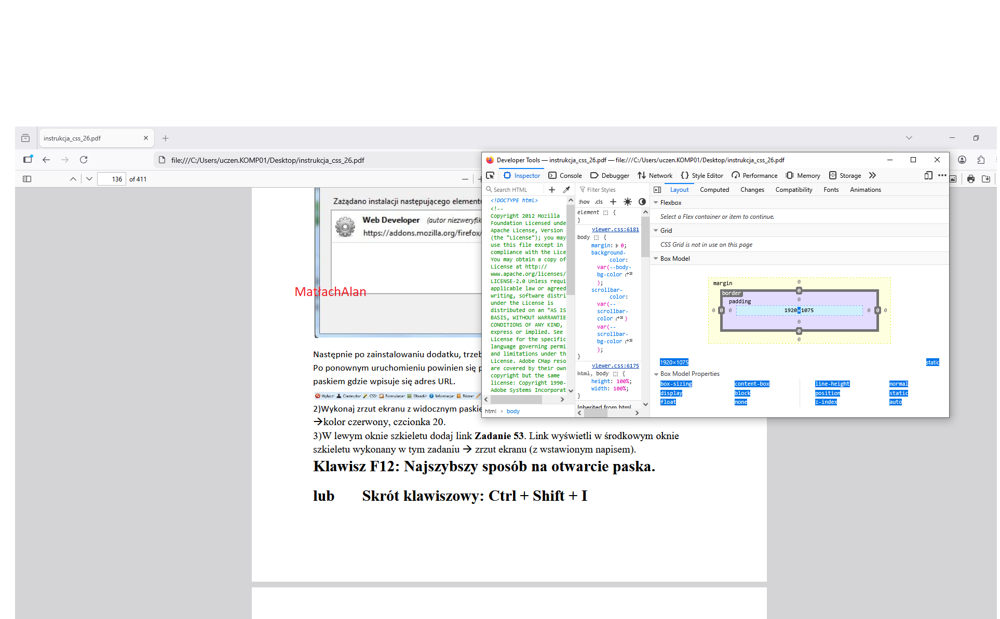

<!DOCTYPE html> <html> <head> <title>stylwpisany</title> <meta charset="UTF-8" /> <link rel="stylesheet" href="style.css" type="text/css" /> </head> <body> <h1>Do czego służy Pasek dewelopera, kiedy jest gotowy do użycia, wymień zakładki Paska developera.</h1> <h2> Pasek dewelopera Web Developer Tools (DevTools) Jest do dyspozycji użytkownika po zainstalowaniu przeglądarki. sTo cały zestaw narzędzi, który zawiera wiele zakładek, m.in.: Elements / Inspector ← (to ten Inspektor opis patrz poniżej) Console (błędy i logi JavaScript) Network (ruch sieciowy) Sources (debugowanie kodu) Application / Storage (cookies, localStorage itd.) To rozbudowane środowisko, które w 2026 roku staje się "rozszerzeniem IDE", oferując AI, analizę pamięci, zaawansowane dławienie sieci i ścisłą integrację z kodem źródłowym. Pozwala szybciej tworzyć lepsze witryny. Dokładny opis patrz Nowe możliwości Web Developer Tools</h2> <h1>Do czego służy Inspektor Elements, w jakiej zakładce się znajduje, do czego służy?</h1> <h2>Inspektor Elements [zakładka] to podstawowe narzędzie do edycji wbudowane w przeglądarkę np. Firefox. Służy głównie do: podglądu struktury HTML strony edycji HTML i CSS „na żywo” sprawdzania stylów (kolory, marginesy, fonty) zaznaczania elementów na stronie</h2> <p></p>